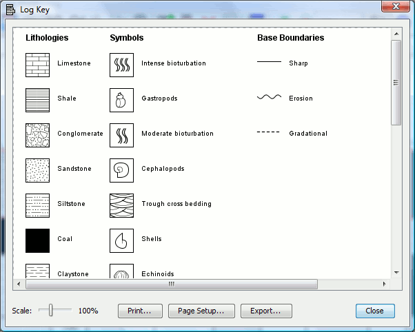

Display
the log key
Each lithology pattern and symbol used in the construction of a log is
stored in a separate file containing the matches of names and
patterns/symbols used in that log. In the View
menu, click Log Key;
alternatively click Log Key on
the toolbar. A window
will appear (see figure bellow) displaying the log key. This can either be printed as a
simple key, or exported in PDF, SVG, or JPEG for
use by other drawing applications or for publications.
See Also
How
to create new lithologies/symbols
Add new lithologies/symbols to SedLog
